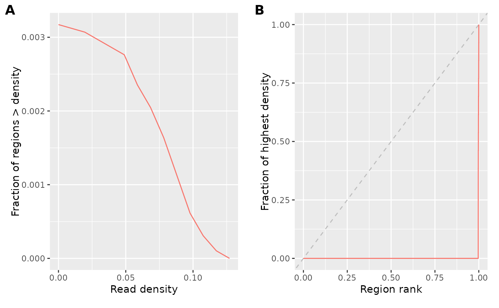

plotCovStats
plotCovStats.RdPlots coverage statistics, such as as fingerprint plot.
Arguments
- qc
A list of coverage statistics, as produced by
getCovStats.- labels
Passed to
plot_grid.
Examples
# we use an example bigwig file
bwf <- system.file("extdata/example_atac.bw", package="epiwraps")
# because most of the file is empty, we'll exclude some of the ranges
cs <- getCovStats(bwf, exclude=GRanges("1", IRanges(1, 4300000)))
plotCovStats(cs)
